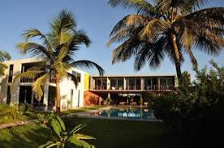
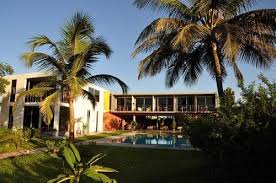
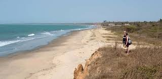
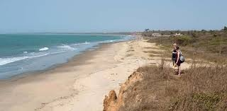

Welcome to Brusubi Hotel
Experiencing the real essence of Brusubi begins with getting to know the basic details. Are you ready to learn just where this unique place is and what attractions you should explore?
There's no lack of things to do in Gunjur, a great destination situated 16 miles (26 kilometers) away from Brusubi. Sanyang Beach and the Gambia Reptile Farm and the Gunjur Central Mosque should be at the top of your list in this destination. Make a day of it and try to visit them all!
Brusubi is located 7 miles (11 kilometers) west of Lamin. You'll also find it 7 miles (11 kilometers) southwest of Bakau.
Gallery
 

 
